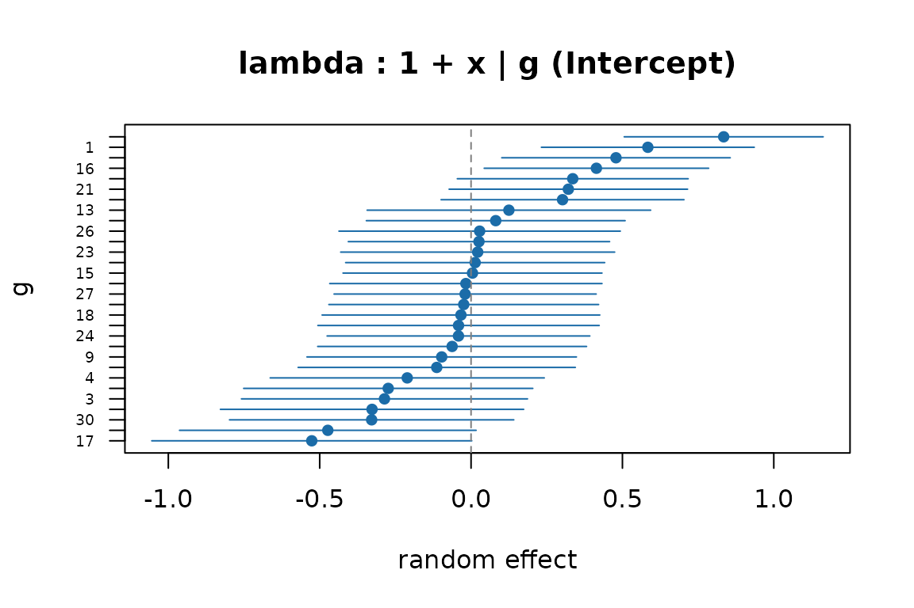

Hierarchical and longitudinal models
Source:vignettes/hierarchical-longitudinal.Rmd
hierarchical-longitudinal.RmdRandom effects can enter any distribution parameter. Models are
fitted by the Laplace approximation (engine = "ml" or the
faster engine = "tmb") or by MCMC
(engine = "bayes"). Marginal models are fitted by
generalized estimating equations or with cluster robust covariances.
Random intercepts and slopes
The syntax follows lme4: (1 | g) for a random intercept,
(1 + x | g) for correlated intercepts and slopes,
(1 + x || g) for independent ones, (1 | a/b)
for nested and (1 | a) + (1 | b) for crossed factors.
G <- 30; m <- 8
dat <- data.frame(g = factor(rep(1:G, each = m)), x = rnorm(G * m))
u <- rnorm(G, 0, 0.6); v <- rnorm(G, 0, 0.3)
dat$y <- rpois(G * m, exp(0.5 + (0.4 + v[dat$g]) * dat$x + u[dat$g]))
fit <- regcomp(y ~ x + (1 + x | g), family = "poisson", data = dat)
summary(fit)
#> <regcomp_fit> Poisson regression, engine 'ml' (frequentist)
#> marginal likelihood approximation: laplace
#> lambda (log link): ~x + (1 + x | g)
#> log likelihood -417.032 on 5 parameters, n = 240
#>
#> Wald estimates with 95% confidence intervals:
#> estimate std_error lower upper z
#> lambda:(Intercept) 0.5495 0.0885 0.3760 0.7230 6.2083
#> lambda:x 0.5157 0.0799 0.3591 0.6723 6.4524
#> lambda:1 + x | g:log_sd((Intercept)) -0.9795 0.2038 -1.3789 -0.5801 -4.8067
#> lambda:1 + x | g:log_sd(x) -1.2338 0.2798 -1.7823 -0.6853 -4.4090
#> lambda:1 + x | g:chol(x,(Intercept)) -0.0504 0.3680 -0.7716 0.6708 -0.1370
#> p_value
#> lambda:(Intercept) 0.000
#> lambda:x 0.000
#> lambda:1 + x | g:log_sd((Intercept)) 0.000
#> lambda:1 + x | g:log_sd(x) 0.000
#> lambda:1 + x | g:chol(x,(Intercept)) 0.891
#> Hessian positive definite
head(ranef_regcomp(fit)[[1]])
#> $`lambda:1 + x | g`
#> (Intercept) x
#> 1 0.583954641 -0.180979238
#> 2 0.478771840 0.280043470
#> 3 -0.285988015 0.001552019
#> 4 -0.210819814 0.377002121
#> 5 0.335894796 0.149178043
#> 6 -0.473178140 0.010998349
#> 7 -0.113394621 -0.406492752
#> 8 -0.062551628 -0.051807328
#> 9 -0.096980000 -0.410294897
#> 10 0.302164446 0.137125647
#> 11 0.013592741 -0.181110822
#> 12 -0.041372422 0.035688790
#> 13 0.124967984 -0.049015613
#> 14 -0.017119339 -0.309315875
#> 15 0.004758258 -0.252656075
#> 16 0.414069022 -0.040985747
#> 17 -0.526184819 0.176752868
#> 18 -0.033389923 0.150890644
#> 19 0.081504756 0.070936672
#> 20 -0.273610288 0.069175099
#> 21 0.321337867 -0.208836744
#> 22 0.026064094 -0.137349927
#> 23 0.021894437 0.045967387
#> 24 -0.041579624 0.002327494
#> 25 0.834486688 0.370681189
#> 26 0.028324956 0.108111516
#> 27 -0.019607245 0.256649705
#> 28 -0.327086373 0.049024294
#> 29 -0.024224495 -0.174962081
#> 30 -0.328384799 0.162463730
plot(fit, which = "ranef")

The estimates, standard errors and log likelihood agree with lme4 and glmmTMB for the families they share.
Predictions with random effects
predict(re = "conditional") uses the estimated effects
of known groups, re = "zero" sets them to zero, and
re = "marginal" averages over the random effect
distribution (population averaged predictions, nmarginal
Monte Carlo draws). Rows with unseen levels, or new data without the
grouping column, are new groups: their effect is zero when conditioning
and drawn from its distribution for marginal predictions and for
simulate(re = "new").
nd <- data.frame(x = c(0, 1), g = factor(c(1, 99)))
predict(fit, nd, type = "mean", re = "conditional")
#> 1 2
#> 3.106313 2.901369
predict(fit, nd, type = "mean", re = "zero")
#> 1 2
#> 1.732355 2.901369
predict(fit, data.frame(x = c(0, 1)), type = "mean", re = "marginal", nmarginal = 2000, seed = 1)
#> 1 2
#> 1.847444 3.223229
dim(simulate(fit, nsim = 2, newdata = data.frame(x = c(0, 1)), re = "new"))
#> [1] 2 2Random effects in other parameters
A random effect in the dispersion gives a model in which the clusters differ in variability as well as in level.
Covariance structures for longitudinal data
Structured random effects describe serial correlation within subjects:
-
ar1(0 + time | id): first order autoregressive over a factor of times; -
cs(0 + time | id),homcs(): compound symmetry; -
diag(),homdiag(),us(): diagonal and unstructured; -
ou(t | id),exp(t | id),gau(t | id),matern32(t | id): continuous time (Ornstein Uhlenbeck) and spatial kernels on numeric times or coordinates.
Tn <- 6; N <- 40
long <- data.frame(id = factor(rep(1:N, each = Tn)), time = factor(rep(1:Tn, N)),
t = rep(1:Tn, N), x = rnorm(N * Tn))
e <- unlist(lapply(1:N, function(i) as.numeric(arima.sim(list(ar = 0.6), Tn, sd = 0.8))))
long$y <- 1 + 0.5 * long$x + e + rnorm(N * Tn, 0, 0.3)
f_ar1 <- regcomp(y ~ x + ar1(0 + time | id), family = "normal", data = long, engine = "tmb")
f_ou <- regcomp(y ~ x + ou(t | id), family = "normal", data = long, engine = "tmb")
c(ar1 = AIC(f_ar1), ou = AIC(f_ou))
#> ar1 ou
#> 656.3059 656.3059With equally spaced times the two models coincide
(rho = exp(-1 / range)), so their AIC values agree; the OU
form also handles irregular times.
The other structures use the same syntax:
structs <- c("us(0 + time | id)", "diag(0 + time | id)", "homdiag(0 + time | id)",
"cs(0 + time | id)", "homcs(0 + time | id)", "exp(t | id)", "gau(t | id)", "matern32(t | id)")
# Some structures put a variance or correlation on its boundary for these
# data; the fits then warn that standard errors are unavailable.
suppressWarnings(sapply(structs, function(s) AIC(regcomp(stats::as.formula(paste("y ~ x +", s)),
family = "normal", data = long, engine = "tmb"))))
#> us(0 + time | id) diag(0 + time | id) homdiag(0 + time | id)
#> 661.0419 721.5049 720.0271
#> cs(0 + time | id) homcs(0 + time | id) exp(t | id)
#> 666.5278 667.2304 656.3059
#> gau(t | id) matern32(t | id)
#> 656.4572 656.4204The TMB engine uses automatic differentiation and is much faster for large multilevel models; it gives the same estimates as the default engine.
Areal, relatedness and space time effects
car(), leroux() and icar()
give areal random effects from an adjacency matrix (icar()
plus (1 | region) is the BYM model); relmat()
takes a known relatedness matrix (kinship, genomic or phylogenetic);
spacetime() crosses a Leroux spatial with an AR(1) temporal
correlation. They work in every parameter and family.
gr <- expand.grid(i = 1:5, j = 1:5)
Wg <- outer(1:25, 1:25, function(a, b) as.numeric(abs(gr$i[a] - gr$i[b]) + abs(gr$j[a] - gr$j[b]) == 1))
dimnames(Wg) <- list(paste0("a", 1:25), paste0("a", 1:25))
ar <- data.frame(area = factor(rep(rownames(Wg), 4), levels = rownames(Wg)), x = rnorm(100))
sp <- as.vector(t(chol(solve(diag(rowSums(Wg)) - 0.9 * Wg))) %*% rnorm(25))
ar$y <- rpois(100, exp(0.3 + 0.5 * ar$x + sp[ar$area]))
fl <- regcomp(y ~ x + leroux(area | 1, Wg), family = "poisson", data = ar)
fb <- regcomp(y ~ x + icar(area | 1, Wg) + (1 | area), family = "poisson", data = ar)
c(leroux = AIC(fl), bym = AIC(fb))
#> leroux bym
#> 303.5827 300.0614
plogis(fl$theta[2]) # Leroux spatial dependence
#> lambda:leroux(area | 1):logit_rho
#> 0.7022909Smooth terms
Smooth terms from mgcv enter any parameter through their mixed model
representation: s() for one dimensional and thin plate
smooths, t2() for tensor products, and by = a
factor for one smooth per level. The smoothing parameters are variance
components estimated with the other parameters; the fits agree with
mgcv::gamm(). (te() and ti() have
no mixed model form; use t2().)
sm <- data.frame(x = runif(300), w = runif(300), f = factor(sample(c("a", "b"), 300, TRUE)))
sm$y <- ifelse(sm$f == "a", sin(2 * pi * sm$x), cos(2 * pi * sm$x)) + rnorm(300, 0, 0.3)
fs <- regcomp(y ~ f + s(x, by = f, k = 8), sigma ~ s(w, k = 5), family = "normal", data = sm)
fs$theta
#> mu:s(x, by = f, k = 8):s(x):fa:log_sd(smooth)
#> 1.0368475
#> mu:s(x, by = f, k = 8):s(x):fb:log_sd(smooth)
#> 0.8717579
#> sigma:s(w, k = 5):log_sd(smooth)
#> -10.6450627
plot(fs, which = "effects", variable = "x")Multiple membership
mm(g1, g2, weights = cbind(w1, w2)) lets an observation
belong to several groups with given weights, as in school mobility
models.
mmd <- data.frame(s1 = factor(sample(1:15, 200, TRUE)), s2 = factor(sample(1:15, 200, TRUE)),
w1 = 0.6, w2 = 0.4, x = rnorm(200))
eff <- rnorm(15, 0, 0.7)
mmd$y <- rnorm(200, 1 + mmd$x + 0.6 * eff[mmd$s1] + 0.4 * eff[mmd$s2], 1)
fmm <- regcomp(y ~ x + (1 | mm(s1, s2, weights = cbind(w1, w2))), family = "normal", data = mmd)
fmm$theta
#> mu:1 | mm(s1, s2, weights = cbind(w1, w2)):log_sd((Intercept))
#> -0.7109981Marginal models
Population averaged effects come from generalized estimating equations with independence, exchangeable, AR(1) or unstructured working correlations, with results equal to geepack.
gee(y ~ x, data = dat, id = g, family = poisson(), corstr = "exchangeable")
#> <regcomp_gee> poisson(log), exchangeable working correlation, 30 clusters
#> estimate robust_se z
#> (Intercept) 0.6425348 0.08650442 7.427768
#> x 0.5016570 0.07146660 7.019460
#> correlation 0.1899 scale 1.5815Any likelihood fit gets cluster robust standard errors:
Discrete time survival and frailty
person_period() expands survival data to one row per
subject and period; a binary model with a random intercept is a frailty
model. The logit link gives the proportional odds model;
links = list(prob = "cloglog") gives grouped proportional
hazards.
n <- 400
sd0 <- data.frame(id = 1:n, cl = factor(rep(1:40, 10)), x = rnorm(n))
tev <- rgeom(n, plogis(-1.5 + 0.5 * sd0$x + rnorm(40, 0, 0.5)[sd0$cl])) + 1
sd0$t <- pmin(tev, 8); sd0$d <- as.numeric(tev <= 8)
pp <- person_period(sd0, "t", "d")
fh <- regcomp(event ~ factor(period) + x + (1 | cl), family = "bernoulli", data = pp)
coef(fh)["prob:x"]
#> prob:x
#> 0.4880301Nonlinear models
y ~ nl(expr) makes the first parameter a nonlinear
function of nonlinear parameters, each with its own formula, as in
nls(), nlme() and nlmer(). A
random effect on a nonlinear parameter gives a nonlinear mixed model,
fitted by the Laplace approximation (as nlmer() does). The
logistic growth of orange trees, with a tree effect on the
asymptote:
O <- as.data.frame(Orange)
O$Tree <- factor(as.character(O$Tree))
fo <- regcomp(circumference ~ nl(Asym / (1 + exp((xmid - age) / scal))),
Asym ~ 1 + (1 | Tree), xmid ~ 1, scal ~ 1, family = "normal", data = O,
control = regcomp_control(start = list(Asym = 200, xmid = 725, scal = 350)))
summary(fo)
#> <regcomp_fit> Normal regression, engine 'ml' (frequentist)
#> marginal likelihood approximation: laplace
#> mu (identity link): nonlinear Asym/(1 + exp((xmid - age)/scal))
#> Asym (identity link): ~1 + (1 | Tree)
#> xmid (identity link): ~1
#> scal (identity link): ~1
#> sigma (log link): ~1
#> log likelihood -131.572 on 5 parameters, n = 35
#>
#> Wald estimates with 95% confidence intervals:
#> estimate std_error lower upper z
#> Asym:(Intercept) 192.0530 15.6576 161.3646 222.7414 12.2658
#> xmid:(Intercept) 727.9059 35.2486 658.8200 796.9918 20.6506
#> scal:(Intercept) 348.0727 27.0798 294.9973 401.1480 12.8536
#> sigma:(Intercept) 2.0596 0.1291 1.8066 2.3127 15.9537
#> Asym:1 | Tree:log_sd((Intercept)) 3.4546 0.3243 2.8191 4.0901 10.6541
#> p_value
#> Asym:(Intercept) 0
#> xmid:(Intercept) 0
#> scal:(Intercept) 0
#> sigma:(Intercept) 0
#> Asym:1 | Tree:log_sd((Intercept)) 0
#> Hessian positive definite
predict(fo, newdata = data.frame(age = c(500, 1500), Tree = "3"))
#> [1] 52.94907 139.66355The expression is on the link scale of the parameter, so any family
works: y ~ nl(log(a) + log1p(-exp(-k * x))) with the
Poisson family gives the mean a * (1 - exp(-k * x)).
Nonlinear parameters take covariates (a ~ z) and need
starting values. The fit equals nls() and
nlmer(); random effects of different nonlinear parameters
are independent.